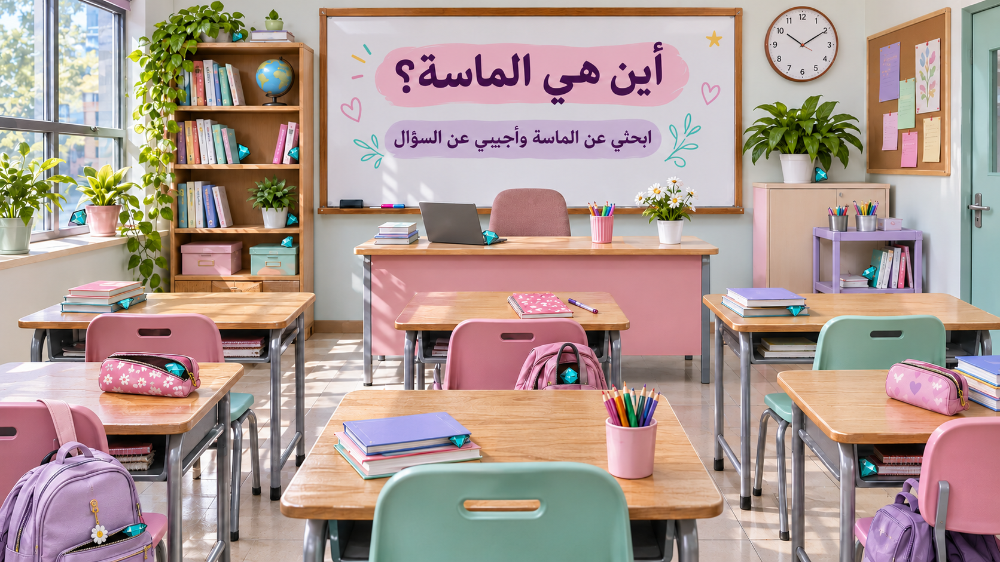

<!doctype html><html lang="ar" dir="rtl"><meta charset="utf-8"><meta name="viewport" content="width=device-width,initial-scale=1"><title>أين هي الماسة؟ — مراجعة التجويد</title><style>
*{box-sizing:border-box}body{margin:0;background:#f6f2ee;color:#422b48;font-family:Tahoma,Arial,sans-serif}header{display:flex;align-items:center;justify-content:space-between;gap:10px;padding:10px 3%;background:#fff;flex-wrap:wrap}h1{font-size:clamp(17px,2vw,25px);margin:0}button{font:inherit;cursor:pointer;border:0;border-radius:12px;padding:10px 18px;background:#e9dcef;color:#422b48}button:focus-visible{outline:3px solid #a8467f}#scene{position:relative;width:min(100%,1600px);margin:auto}#scene img{display:block;width:100%}.gem{position:absolute;background:transparent;padding:0;width:3.6%;height:6.4%;transform:translate(-50%,-50%);border-radius:50%;color:transparent}.gem:hover{box-shadow:0 0 0 2px #fff8}.gem.done{background:#ffffffca;color:#127d73;font-weight:bold}.gem.bad{background:#e63c48e6;color:#fff;font-weight:bold}.gem.reveal{outline:3px solid #e63c48}dialog{border:0;border-radius:24px;padding:clamp(20px,4vw,42px);width:min(92vw,750px);color:#422b48;max-height:90vh;overflow:auto;box-shadow:0 16px 70px #31233744}dialog::backdrop{background:#23302e9c;backdrop-filter:blur(4px)}#question{font-size:clamp(20px,3vw,29px);line-height:1.9;margin:14px 0}#answers{display:grid;gap:12px}#answers button{text-align:right;background:#f4edf7;border:1px solid #e5d5ed;line-height:1.7;font-size:clamp(17px,2vw,21px)}.label{color:#8a4e8a}#toast{position:fixed;bottom:20px;left:50%;transform:translateX(-50%);background:#fff;padding:15px 25px;box-shadow:0 4px 30px #0003;border-radius:16px;z-index:3;max-width:90%;text-align:center}#toast:empty{display:none}#answers button.ok{background:#d9f2e1;border-color:#3f9a62;color:#17582f}#answers button.no{background:#fbdde2;border-color:#c4475b;color:#7d1d2d}#fb{margin-top:16px;font-size:clamp(20px,2.6vw,26px);font-weight:bold;text-align:center;line-height:1.8}#fb.ok{color:#17803f}#fb.no{color:#b3243a}footer{text-align:center;padding:12px;font-size:14px;color:#6d6172}.close{float:left;padding:6px 12px}#final{text-align:center}#final h2{font-size:30px}#final p{font-size:23px;line-height:1.8}@media(orientation:landscape) and (max-height:550px){header{padding:5px 2%}footer{display:none}#scene{width:min(100%,calc((100dvh - 55px)*1.777))}}
</style><header><h1>💎 أين هي الماسة؟ <small>مراجعة التجويد</small></h1><span id="progress" aria-live="polite"></span><div><button id="hint">إظهار الأماكن</button> <button id="reset">إعادة اللعب</button></div></header><main id="scene"></main><footer>ابحثي عن ماسة واضغطي عليها للإجابة • تعودين للفصل مباشرةً بعد الإجابة</footer><dialog id="quiz"><button class="close" aria-label="إغلاق السؤال">×</button><span class="label" id="number"></span><h2 id="question"></h2><div id="answers"></div><div id="fb" role="status" aria-live="assertive"></div></dialog><dialog id="final"><h2>أحسنتِ، اكتملت الرحلة! 💎</h2><p id="result"></p><button onclick="restart()">العبِي من جديد</button></dialog><div id="toast" role="status"></div><script>
const questions=[["المخرج المقدّر هو الذي لا يعتمد على جزء محدد من أجزاء الحلق أو اللسان أو الشفتين، ما عدا الجوف.", ["صح", "خطأ"], 1], ["أكملي الشاهد من الجزرية: للجوف ألف وأختاها وهي ………………… للهواء تنتهي.", ["حروف مد", "حروف أقصى الحلق", "حروف وسط الحلق"], 0], ["حروف أقصى الحلق تخرج من:", ["منطقة الأوتار الصوتية", "منطقة لسان المزمار", "منطقة جذر اللسان"], 0], ["ما سبب توسط صفة حرف العين؟", ["بسبب رجوع لسان المزمار رجوعًا بينيًّا", "بسبب انحباس الصوت تمامًا في المخرج", "بسبب جريان الصوت جريانًا كاملًا", "بسبب انفتاح المخرج واتساعه تمامًا"], 0], ["تعتمد صفة الهمس على:", ["جريان الصوت", "انحباس الصوت", "جريان النفس", "انحباس النفس"], 2], ["صفة ضعيفة يجب تجنبها:", ["اللين", "الخفاء", "التفشي", "جميع ما سبق"], 1], ["كم عدد الحروف التي تخرج من الحلق؟", ["ثلاثة حروف", "ستة حروف", "أربعة حروف"], 1], ["الاستعلاء هو انحصار الصوت بين اللسان والحنك الأعلى.", ["صح", "خطأ"], 1], ["زمن النون المشددة في كلمة (النَّهار) متوسط؛ لأنها من حروف (لن عمر).", ["صح", "خطأ"], 1], ["حرفا العين والحاء يخرجان من أدنى الحلق.", ["صح", "خطأ"], 1], ["ما علاج الخطأ في نطق كلمة (حكيمًا) عند الوقف، إذا كان الخطأ إنهاء المد بهمزة؟", ["فتح الفكين وعدم سحب الصوت للداخل حتى لا تنغلق الحبال الصوتية.", "اتساع المخرج وإعطاء مجال أوسع في الفم حتى يخرج الصوت منه.", "لا يُعدّ هذا خطأ."], 0], ["صفات حرف الكاف هي: الهمس، والشدة، والاستعلاء، والانفتاح، والإصمات.", ["صح", "خطأ"], 1], ["تخرج القلقلة باهتزاز الحبال الصوتية دون مصاحبة حركة.", ["صح", "خطأ"], 1]];
const positions=[[23.7,6.2],[24.3,27],[29.3,27.4],[29.2,38.8],[28.8,43.2],[8,38.8],[49,42.3],[82,30.9],[87,48.6],[79.5,55],[12.4,54],[17.5,65.5],[57,66.9],[45.8,78.5],[86.8,83.3],[13.5,94.3]];
let answered=0,score=0,active=null,locked=false,used=new Set();const scene=document.querySelector('#scene'),quiz=document.querySelector('#quiz'),final=document.querySelector('#final');
positions.forEach(([x,y],i)=>{let b=document.createElement('button');b.className='gem';b.style.left=x+'%';b.style.top=y+'%';b.setAttribute('aria-label','اختيار الماسة '+(i+1));b.onclick=()=>openQuestion(b);scene.append(b)});
function update(){document.querySelector('#progress').textContent='الأسئلة: '+answered+' / ١٣  •  الصحيحة: '+score}
function openQuestion(b){if(b.classList.contains('done')||locked)return;if(answered>=questions.length){showFinal();return}if(b.dataset.q===undefined){let free=questions.map((_,k)=>k).filter(k=>!used.has(k));if(!free.length)return;let k=free[Math.floor(Math.random()*free.length)];used.add(k);b.dataset.q=k}active=b;let q=questions[+b.dataset.q];document.querySelector('#number').textContent='السؤال '+(answered+1)+' من ١٣';document.querySelector('#question').textContent=q[0];let a=document.querySelector('#answers');a.replaceChildren();document.querySelector('#fb').textContent='';document.querySelector('#fb').className='';q[1].forEach((s,i)=>{let btn=document.createElement('button');btn.textContent=s;btn.onclick=()=>answer(i);a.append(btn)});quiz.showModal()}
function answer(i){if(locked)return;locked=true;let q=questions[+active.dataset.q],ok=i===q[2];score+=ok?1:0;answered++;active.classList.add('done');if(!ok)active.classList.add('bad');active.textContent=ok?'✓':'✗';active.disabled=true;update();let bs=[...document.querySelectorAll('#answers button')],fb=document.querySelector('#fb');bs.forEach((b,j)=>{b.disabled=true;if(j===q[2])b.classList.add('ok');else if(j===i)b.classList.add('no')});fb.className=ok?'ok':'no';fb.textContent=ok?'✔ إجابة صحيحة، أحسنتِ!':'✖ إجابة خاطئة — الإجابة الصحيحة: '+q[1][q[2]];setTimeout(()=>{quiz.close();locked=false;if(answered===13)setTimeout(showFinal,300)},ok?1500:3200)}
function showFinal(){document.querySelector('#result').textContent='أجبتِ عن ١٣ سؤالًا، وإجاباتك الصحيحة: '+score+' من ١٣';if(!final.open)final.showModal()}
function restart(){quiz.close();final.close();answered=0;score=0;locked=false;used.clear();document.querySelectorAll('.gem').forEach(b=>{delete b.dataset.q;b.classList.remove('done','bad','reveal');b.textContent='';b.disabled=false});document.querySelector('#hint').textContent='إظهار الأماكن';document.querySelector('#toast').textContent='';update()}
document.querySelector('.close').onclick=()=>{if(!locked)quiz.close()};document.querySelector('#reset').onclick=restart;document.querySelector('#hint').onclick=()=>{let on=document.querySelector('.gem').classList.toggle('reveal');document.querySelectorAll('.gem').forEach(b=>b.classList.toggle('reveal',on));document.querySelector('#hint').textContent=on?'إخفاء الأماكن':'إظهار الأماكن'};update();
</script></html>